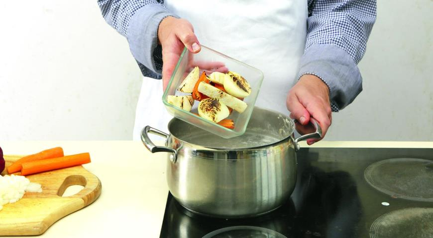
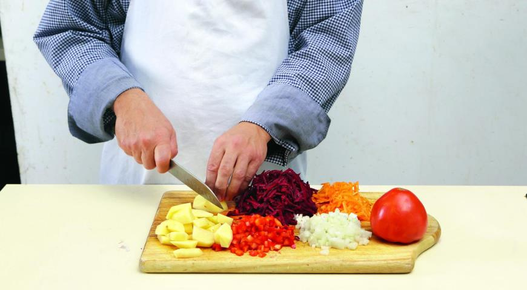
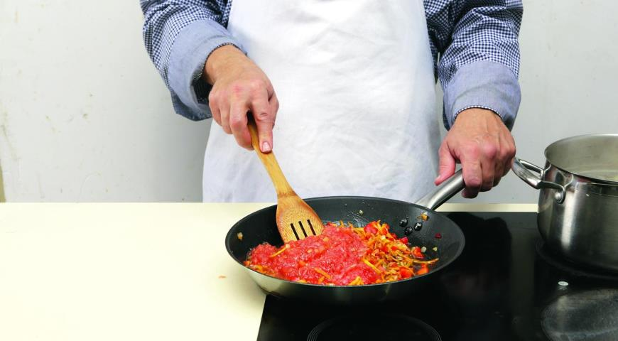
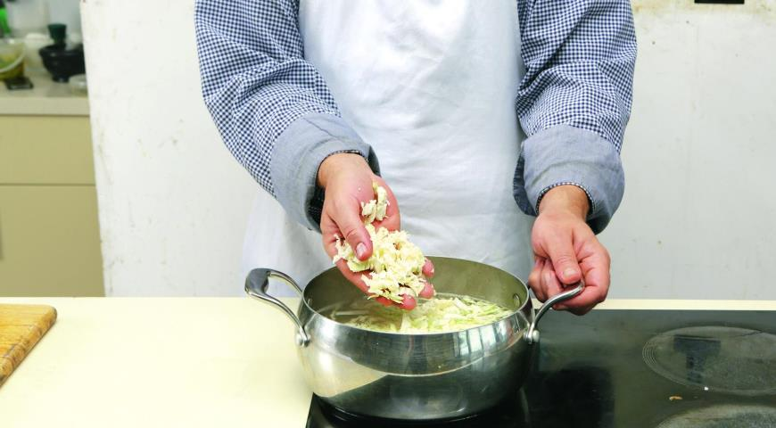
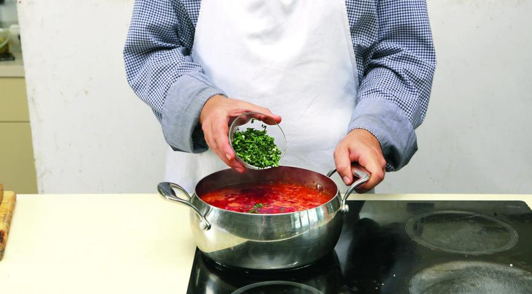

Украинский борщ
Украинский борщ в полной мере отражает характер кухни страны: суп этот сытный, ароматный, разноцветный, густой, невероятно вкусный. И, кстати, очень полезный, ведь в его состав входит большое количество корнеплодов и овощей. Плюс — зелень с чесноком в самом конце приготовления! В общем, настоящий подарок и для души, и для тела. Многие не решаются взяться за приготовление украинского борща из-за длительности варки и большого количества тонкостей, которые необходимо учитывать. Спешим успокоить: наш вариант украинского борща довольно прост в исполнении, поэтому с ним справится даже тот, кто делает свои первые шаги к кулинарным вершинам.
-
Время подготовки2ч 30мин
-
Время готовки1ч
-
Количество порций8-10
-
Сложность приготовленияСредняя
- 1 кг грудинки на косточках
- 1 небольшая луковица
- 1 средняя морковка
- 1 средний корень петрушки
- средний пучок петрушки
- 1 лавровый лист
- перец горошком
- соль
- толченое сало и сметана для подачи
- 2 небольшие свеклы
- 1 большая луковица
- 2 средние морковки
- 3 средние картофелины
- 1 средний красный сладкий перец
- четвертинка небольшого кочана капусты
- 4 спелых средних помидора
- 3 зубчика чеснока
- 2 ст. л. яблочного уксуса
Пошаговый рецепт приготовления
Шаг 1
Готовим бульон для украинского борща. Положите мясо в большую кастрюлю, залейте водой, чтобы покрыла мясо на 5 пальцев. Доведите до кипения и снимите пену. Огонь уменьшите до минимума. Лук, морковь и корень петрушки очистите, разрежьте вдоль пополам и припеките на сухой сковородке до коричневых подпалин. Добавьте к мясу овощи, перец горошком, стебли петрушки (листья сохраните). Варите 2,5 ч. За 15 мин. до окончания положите соль и лавровый лист.
Шаг 2
Процедите бульон. Снимите мясо с костей небольшими кусками, из мозговой кости выньте костный мозг.
Шаг 3
Для заправки украинского борща очистите все овощи. Мелко нарежьте лук. Морковь и свеклу натрите на крупной терке. Перец нарежьте мелкими кубиками. Картофель – средними дольками. Капусту нашинкуйте. Помидоры натрите на терке.
Шаг 4
Поставьте на средний огонь 2 сковороды, в каждой растопите сало. В одну положите лук, в другую – свеклу. Обжаривайте, помешивая, 5 мин. К луку добавьте морковь и перец, в свеклу – уксус. Готовьте еще 5 мин. Свеклу снимите с огня, в лук с морковкой положите помидоры. Готовьте еще 5 мин.
Шаг 5
Вскипятите бульон для борща, положите картофель, варите 10 мин. Положите капусту, варите 5 мин. Добавьте свеклу и лук с морковью, доведите до кипения, варите 10 мин.
Шаг 6
Чеснок мелко порубите с листьями петрушки, добавьте в борщ вместе с мясом и костным мозгом. Посолите и поперчите. Доведите до кипения, выключите огонь и настаивайте украинский борщ 15 мин. Подавайте с толченым салом и сметаной.